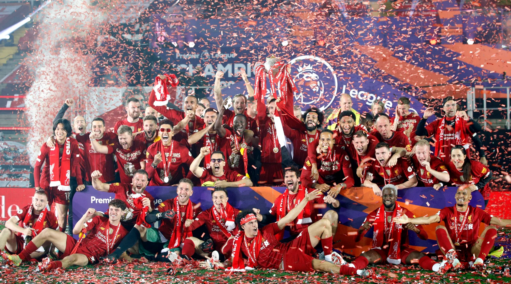
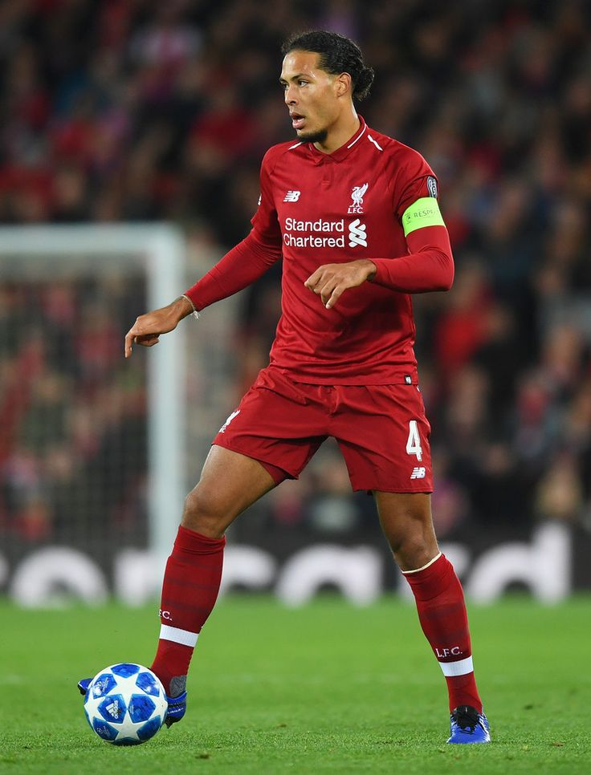
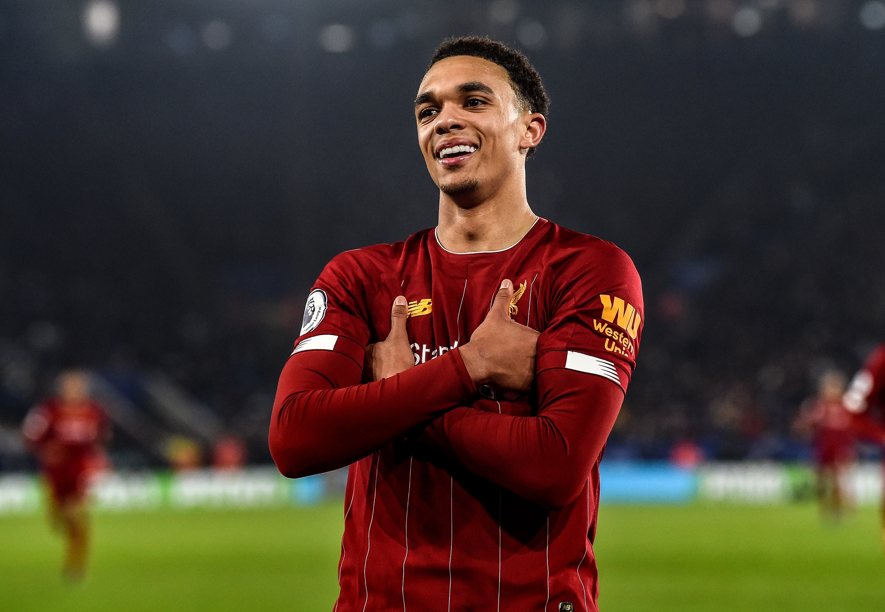
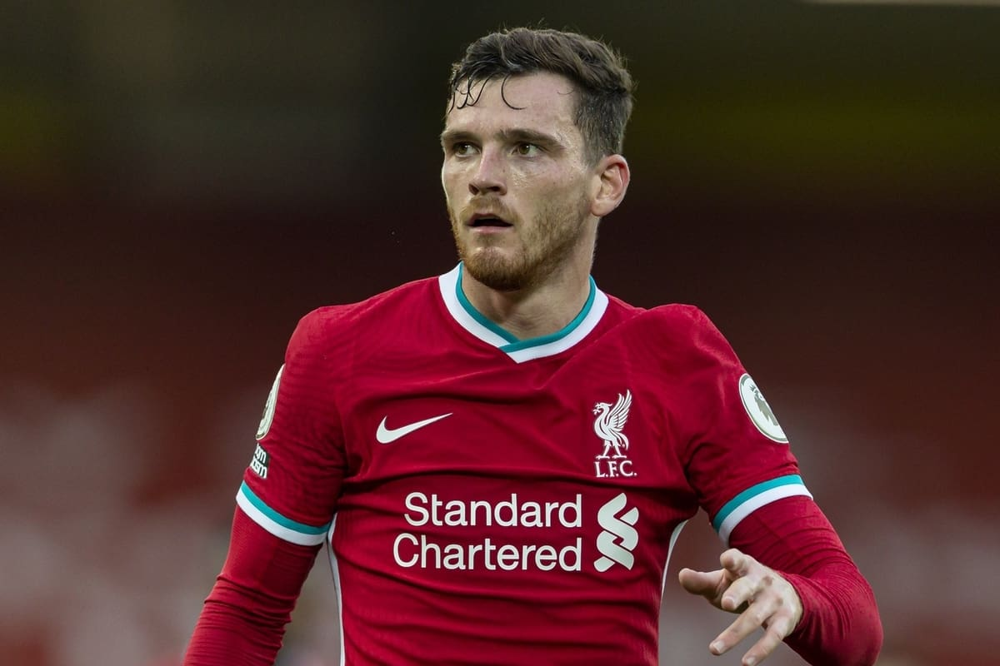
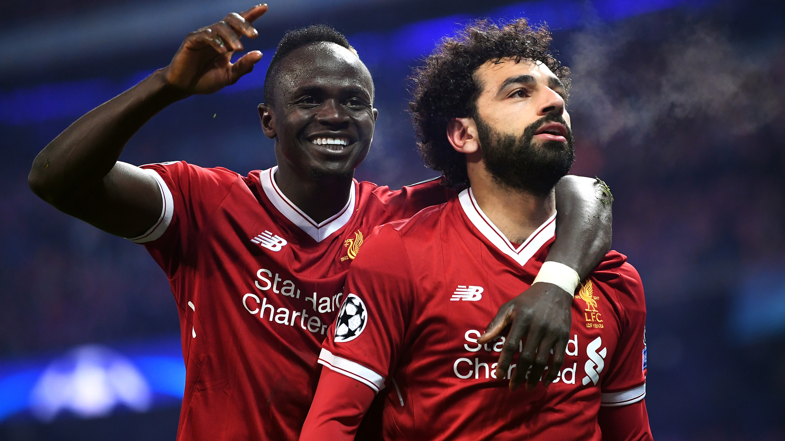
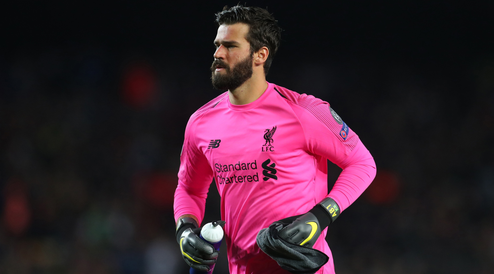
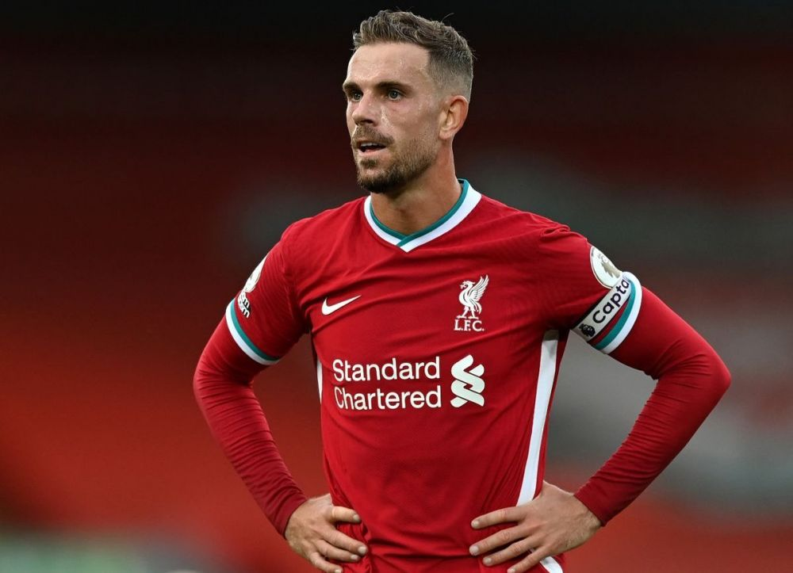
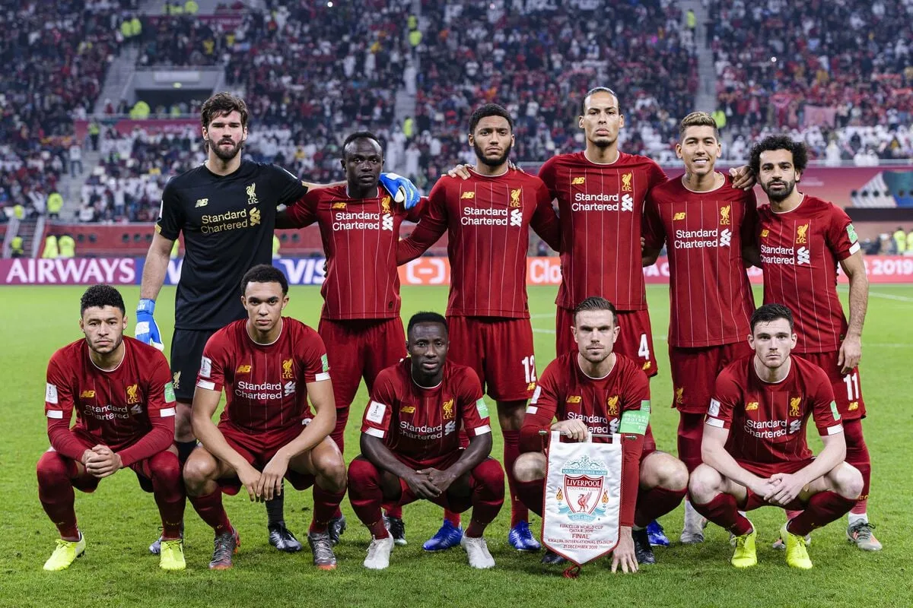

ливерпуль одна из самых лучших команд европы по футболу
лучший защитник по моему мнению
Вирджил Вандайк,
Трент Александор Арнольд,
Робертсон
 Ссылка на сайт Ливерпуляи ливерпульские волшебники
Мохамед Салах и Садио Мане
и их тащер
Алиссон
и капитан Хендерсон
ЛУЧШИЙ ТРЕНЕР ПО МОЕМУ МНЕНИЮ

Юргер Клопп.
ливерпуль всё же остаётся после проигранного финала лч и после проигранной гонки в английской премьер лиги одной из самых сильных команд европы
но всё ещё в переди , и я думаю , что ливерпуль в следующем сезоне они выигрют лч и выиграют апл
07.07.2022